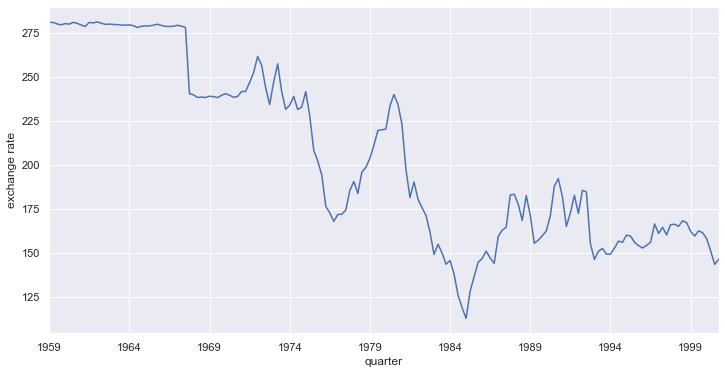
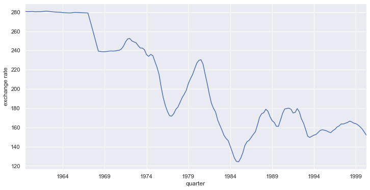
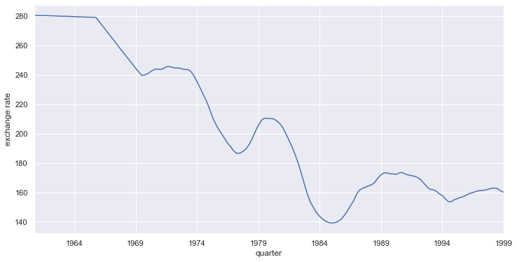
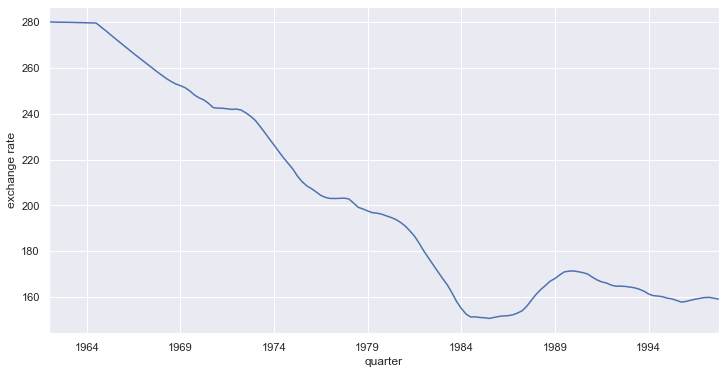

import pandas as pd
from statsmodels import datasets
from matplotlib import pyplot as plt
import seaborn as snsDecomposing Non-Seasonal Time Series
M249
Statistics
TimeSeries
Summary notes
Return the estimate of the trend component of a non-seasonal time series by taking the simple moving average.
Data was sourced from Rdatasets1 using StatsModels Datasets package.2
Three trend estimates were obtained, using the workflow: rolling3 → mean → dropna
The choice of order must be an odd number. Too low an order risks under-smoothing, meaning much of the irrelavent noise is kept. Coversely, too high an order risks over-smoothing, meaning any subtle (but important) changes in the trend are ironed out
This topic was covered in M249, Book 2, Part 1.4.
Dependencies
Set the graphing defaults. (This is optional.)
sns.set_theme()Main
Load the data
macrodat = datasets.get_rdataset('Macrodat', package='Ecdat', cache=True)
macrodat.data.info()<class 'pandas.core.frame.DataFrame'>
RangeIndex: 168 entries, 0 to 167
Data columns (total 7 columns):
# Column Non-Null Count Dtype
--- ------ -------------- -----
0 lhur 168 non-null float64
1 punew 168 non-null float64
2 fyff 168 non-null float64
3 fygm3 168 non-null float64
4 fygt1 168 non-null float64
5 exruk 168 non-null float64
6 gdpjp 162 non-null float64
dtypes: float64(7)
memory usage: 9.3 KBInitialise and plot the time series
Initialise the Series.
According to the documentation, the initial quarter is the first quarter of 1959.
ts_exruk = pd.Series(
data=macrodat.data['exruk'].to_numpy(),
name='exchange rate',
index=pd.period_range(
start='1959-01-01',
periods=macrodat.data['exruk'].size,
freq='Q',
name='quarter'
)
)
ts_exruk.info()<class 'pandas.core.series.Series'>
PeriodIndex: 168 entries, 1959Q1 to 2000Q4
Freq: Q-DEC
Series name: exchange rate
Non-Null Count Dtype
-------------- -----
168 non-null float64
dtypes: float64(1)
memory usage: 2.6 KBPlot the quarterly time series.4
ts_exruk.plot(kind='line', figsize=(12, 6), ylabel=ts_exruk.name)
plt.show()
Decompose the time series
Try order = 5.
ma5 = ts_exruk.rolling(window=5, center=True).mean().dropna()
_g = ma5.plot(kind='line', figsize=(12, 6), ylabel=ts_exruk.name)
plt.show()
Try order = 15.
ma15 = ts_exruk.rolling(window=15, center=True).mean().dropna()
_g = ma15.plot(kind='line', figsize=(12, 6), ylabel=ts_exruk.name)
plt.show()
Try order = 25.
ma25 = ts_exruk.rolling(window=25, center=True).mean().dropna()
_g = ma25.plot(kind='line', figsize=(12, 6), ylabel=ts_exruk.name)
plt.show()
Footnotes
Arel-Bundock V (2022). Rdatasets: A collection of datasets originally distributed in various R packages. R package version 1.0.0, https://vincentarelbundock.github.io/Rdatasets↩︎
See The Datasets Package (StatsModels)↩︎
At the time of writing, there was an using Seabron to plot a
Serieswith aPeriodIndex, so we instead use theplotmethod ofSeriesfor quarterly data.↩︎